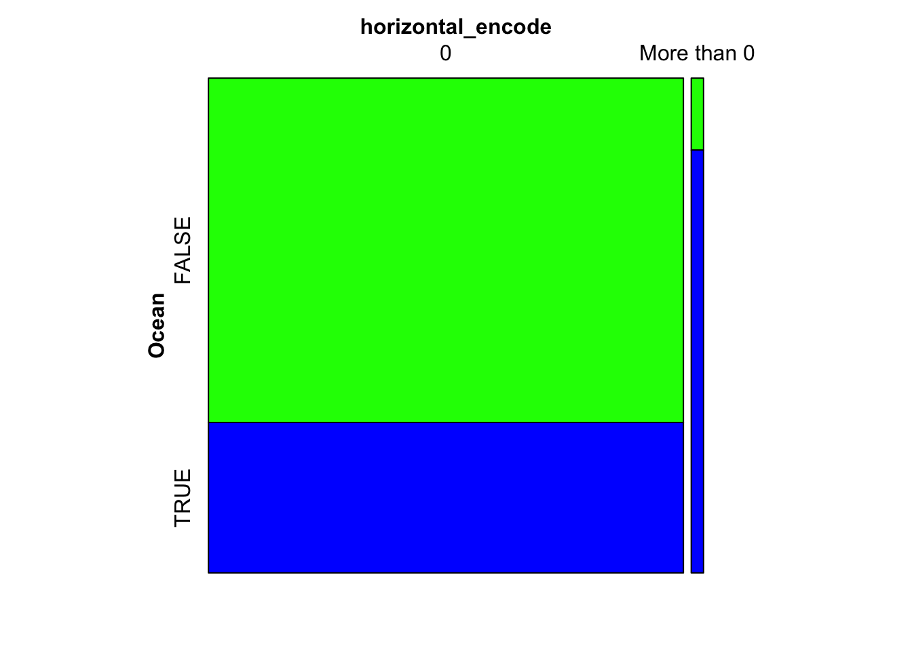
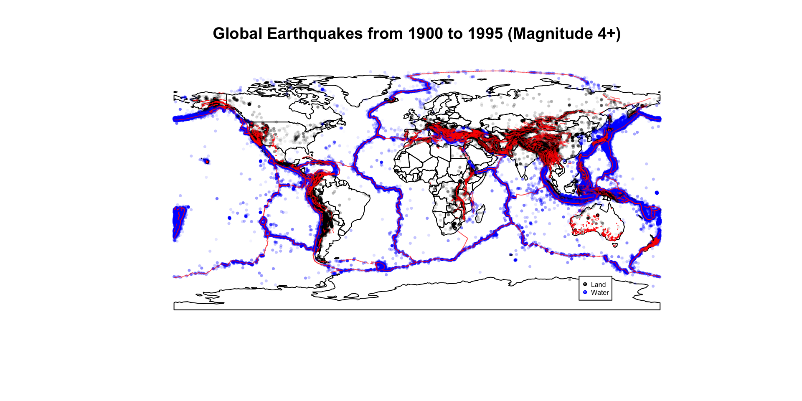
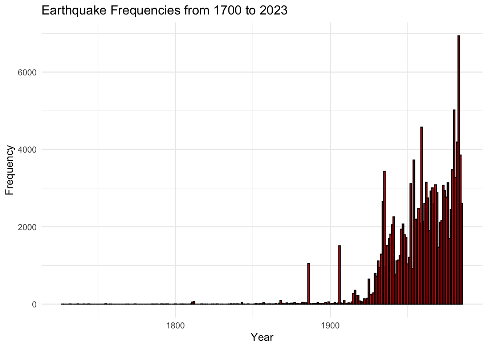
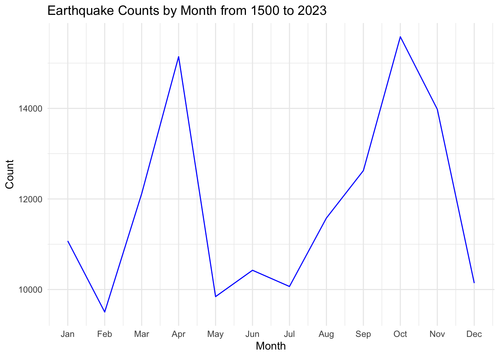
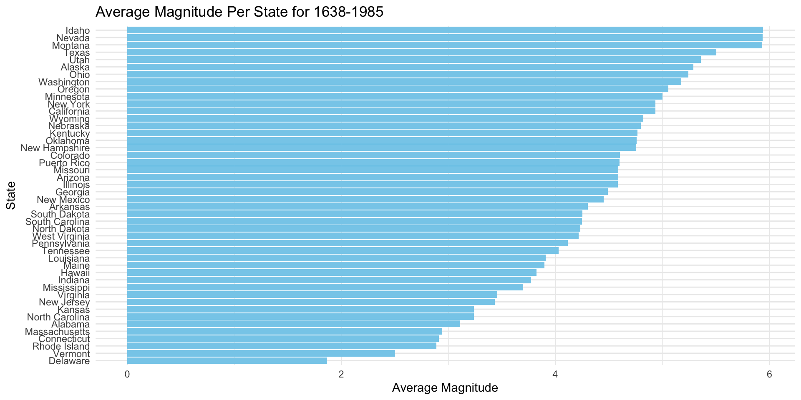
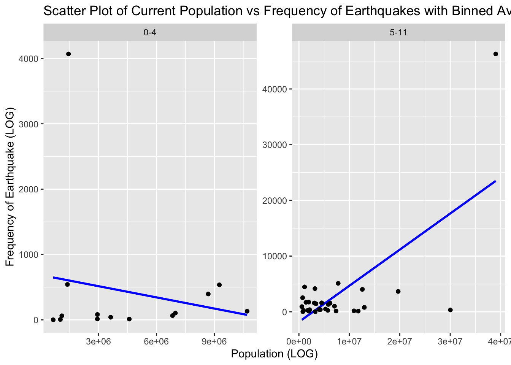
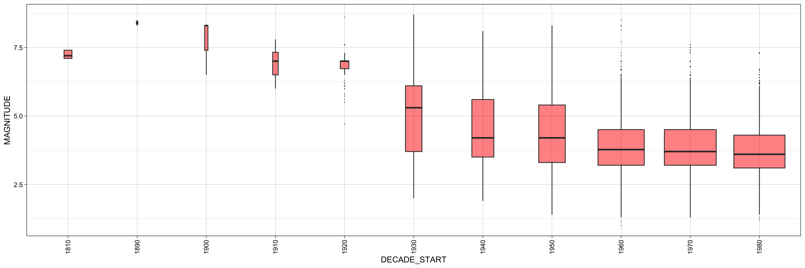

5 Conclusion
Our data analysis (shown in the results section) has enabled us to draw some conclusions that solved our original questions. As a reminder we have attached our questions below, and will subsequently answer them.
Geographical Elements:
- What is the distribution of earthquakes on land versus in the ocean?(US Data) - What is the distribution of earthquakes with respect to fault lines?
Time Elements:
- Are there discernible patterns in the time series of earthquakes, indicating seasonality or other temporal trends? (US Data) - We will break this down into earthquakes over differrent months, as well as over different years. (US Data)
Demographic Elements:
- How close do earthquakes occur to population and US city centers? (Note we are using US city centers as states due to the lack of datasets in other countries).
Severity of damage:
- What is the distribution of magnitudes for earthquakes over time?(US Data)
Geographical Elements: Most earthquakes occur on Land. The Mosiac plot we created highlighted this pretty clearly. Additionally the plot described the phenomenon we see with horizontal error—a way to measure location error with earthquakes. We can see that if an Earthquake occurs in the Ocean then it is more likely to have a measurement error. This makes intuitive sense, yet is still something to consider when when making policy around earthquake measurement in ocean exposed areas.
We also found that earthquakes tend to occur most near fault lines, with most locations in our global dataset occuring near or around these lines. This is an important factor to be considered by tourists planning to visit these locations for the holidays.

Time Elements: According to our analysis, a simple line chart showed that most earthquakes within the USA occurred in the month of November. This is an interesting month to occur, however our hunch is that this is when the seasonality is changing from summer to winter across the country, and thereby there could be larger seismic activity because of this change. This does not neccessary mean that winter has more earthquakes because its more consdusive to said events—on the contrary January and December have some of the lowest counts of Earthquakes. Additionally, we also noticed that later decades, 1900s and 2000s experienced much more earthquakes than earlier on. One possibility was that it became much easier to capture these events later on due to tech etc and thus they appear more in the dataset. These are things that are definetely imporant for both policy makers and tourists. Tourists should be cautious of the timings of theiir travel to areas that are especially exposed to earthquakes and polcy makers should be aware, and continue to try creating tech that can detect more and more earthquakes.


Demographic Elements: We found that the states with the most earthquakes prominently occured on the west coast of America, with California leading the counts by far. However, with respect to magnitude, Idaho has by far the largest average magnitude per earthquake. Below is the plot for the average magnitude per state.
Code
#| warning: false
#| message: false
#| echo: false
# Group by state, calculate the average magnitude across all years
# Assuming your data frame is named 'your_data'
# Drop rows with NA values
state_earthquakes_selected_cleaned <- na.omit(state_earthquakes_selected)
# Select one row per state, grouping by and getting the average
one_per_state <- state_earthquakes_selected_cleaned %>% mutate(col_a = 1) %>% select(state = NAME, magnitude=MAGNITUDE) %>% group_by(state) %>% summarise(magnitude=mean(magnitude))
ggplot(one_per_state, aes(x = magnitude)) +
geom_bar(stat = "identity", aes(y=fct_reorder(state, magnitude)),fill = "skyblue") +
labs(title = "Average Magnitude Per State for 1638-1985", x = "Average Magnitude", y = "State") +
theme_minimal()
In order to diisplay the counts of earthquakes per state, we decided to create a clevland dot plot, faceted by the quantiles, where each quantile holds the states that exist in that quantile. For example Washington is within the 4th quantile because the number of earthquakes it has puts it at the fourth quantile. Additionally, we colored the points to show how year impacts the occurence of Earthquakes. What was most obvious was how , as we found before, later decades tended to have higher earthquake counts overall. In addition to this we got to inspect how certain states may have higher earthquake counts than others. As we mentioned California had by far the highest. Illinois, New york and Hawaii were next during later decades. Upon inspection it seemed as though these were states were those with higher population counts. In order to confirm this we created a faceted scatter plot shown below.
Code
# Pivot the table so we have one row per year and state
#| echo: false
population_per_state <- state_pop %>%
pivot_longer(cols = starts_with("x"),
names_to = "year",
values_to = "population") %>%
arrange(State, year)
# Display the updated data frame
# population_per_state
As we can see the correlation for low and high magnitude earthquake counts is slightly positive indicating that higher population states tend to have higher earthquake counts. This makes sense as these are the states often closer to fault lines. What this highlights though is tha tpolicy makers need to ensure these states hold heavier protection against earthquakes as they contain more people.
Severity Damage: We captured the sevirty damage of earthquakes by analyzing the severity as the magnitude Our interest lied in the question of whether or not the severity changed over time. If it did in the positive direction, that is the overall variance and median of magnitudes has increased over time, then it could mean that we as a population are doing something to trigger these events, and could therefore notify Policy makers. Below is a box plot of distributions of magnitude for every decade in our dataset. What we can evidently see is that until 1930, the variance of earthquake magnitudes were extremely low, with a high median. As the decades progressed, the variance increased largely but the median decreased. This confirms our previously thought theory that technology improved overtime allowing us to predict small and large earthquakes better thereby increasing the variance of captured earthquake’s magnitude overall. We do not need to be concerned, therefore, of human led earthquake activity.
`summarise()` has grouped output by 'DECADE_START', 'YEAR', 'MONTH', 'DAY'. You
can override using the `.groups` argument.